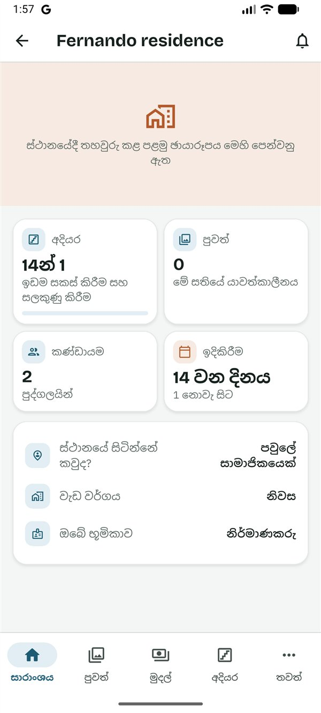
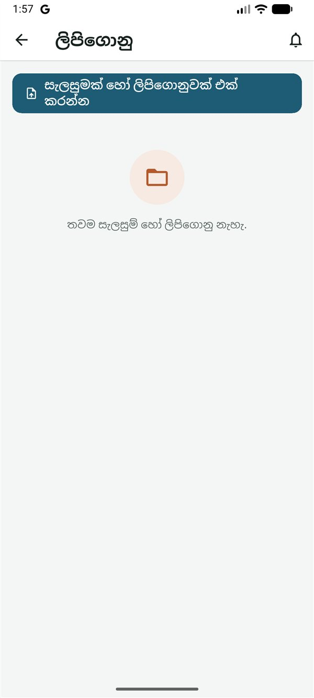
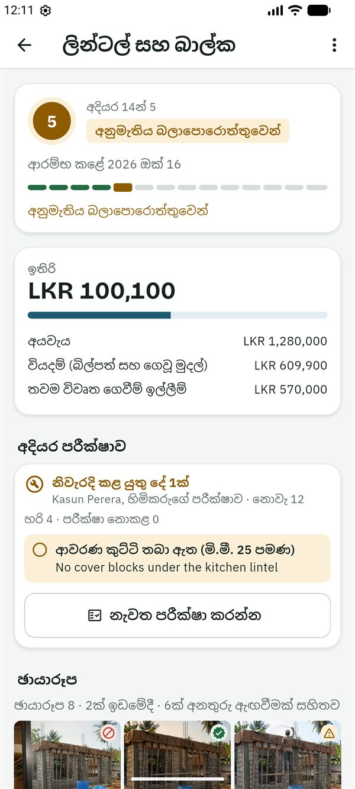
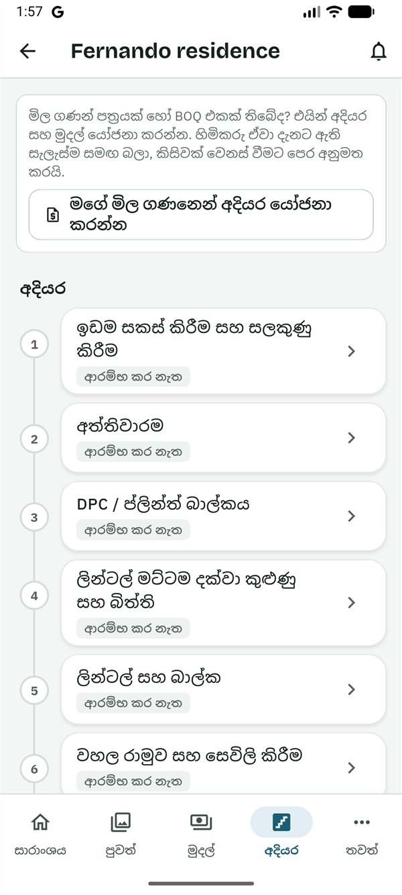

SiteProof
SiteProofමෙම සිංහල පාඨය කෙටුම්පතකි. යෙදුමේ සිංහල මෙන්ම, සිංහල මව් භාෂාව වන කෙනෙකු එය තවම සමාලෝචනය කර නැත.
This Sinhala text is a draft awaiting review by a native speaker, like the app's Sinhala.
මාර්ගෝපදේශ › නිර්මාණකරු
නිර්මාණකරුවන් සඳහා මාර්ගෝපදේශය
Read in English (ඉංග්රීසියෙන් කියවන්න)
මෙම මාර්ගෝපදේශය නිර්මාණකරු සඳහායි: නිවසේ ගෘහ නිර්මාණ ශිල්පී, ඇඳුම්කරු හෝ ඉංජිනේරු. ඔබ සැලසුම් බෙදාගනී, ඒවා ගැන ප්රශ්නවලට පිළිතුරු දෙයි, සහ ප්රධාන අදියර වැඩබිමේදී පරීක්ෂා කරයි, එවිට දන්නා කෙනෙකු වැඩේ බැලූ බව පවුල දැනගනී. ඔබට අයවැය පෙනෙන්නේ හිමිකරු ඉඩ දුන්නොත් පමණි. ඔබට SiteProof නොමිලේ.
ඔබට කළ හැකි සහ කළ නොහැකි දේ
ඔබට කළ හැකි දේ
- යාවත්කාලීන සහ ඡායාරූප, අදියර, කණ්ඩායම, ස්ථානය සහ සියලු ලිපිගොනු බැලීම.
- සැලසුම් සහ ලිපිගොනු එක් කිරීම, සහ ඔබ එක් කළ ඒවා ඉවත් කිරීම.
- සැලසුම් ගැන ප්රශ්නවලට පිළිතුරු දීම, සහ යාවත්කාලීන ගැන අදහස් දැක්වීම.
- වැඩබිමේදී අදියරක් එහි පරීක්ෂා ලැයිස්තුවට අනුව පරීක්ෂා කර, අනුමත කිරීම හෝ නිවැරදි කළ යුතු දේ ලැයිස්තු කිරීම.
- ඔබේ වැඩබිම් සංචාර වලින් යාවත්කාලීන පළ කිරීම.
- ඔබේ මිල ගණන් පත්රයෙන් හෝ BOQ එකෙන් අදියර සහ මුදල් යෝජනා කිරීම.
- වැඩේ වෙනස්කම් බැලීම, සහ හිමිකරුගේ තීරණයට එකක් සටහන් කිරීම (Plus).
- හිමිකරු ඉඩ දුන්නොත්, අයවැය, බිල්පත් සහ ගෙවීම් කාලසටහන බැලීම.
ඔබට කළ නොහැකි දේ
- ගෙවීම් ඉල්ලීම් බැලීම හෝ ඉල්ලීම.
- බිල්පත් එක් කිරීම.
- අදියර ආරම්භ කිරීම හෝ අවසන් කිරීම, හෝ සැලසුමක් දුටු බව තහවුරු කිරීම: ඒවා ඉදිකරන්නන්ගේ කාර්යයි.
- අයට ආරාධනා කිරීම හෝ ඉවත් කිරීම, හෝ ව්යාපෘතිය, එහි අදියර සහ අයවැය වෙනස් කිරීම (ඒ වෙනුවට ඔබ අදියර යෝජනා කරයි).
- ස්ථානය සලකුණු කිරීම, හෝ සජීවී පරීක්ෂාවක් ඉල්ලීම.
ආරම්භ කිරීම
- හිමිකරු ඔබට ආරාධනා කරයි. ඔබට සිංහලෙන් සහ ඉංග්රීසියෙන් පණිවිඩයක්, සාමාන්යයෙන් WhatsApp හරහා, අක්ෂර 6ක කේතයක් සමඟ ලැබේ. කේතය එක් වරක් පමණක්, දින 7ක් වලංගුයි.
- Google Play වෙතින් SiteProof ස්ථාපනය කරන්න. SiteProof පරීක්ෂා කරන කාලය තුළ, එය ස්ථාපනය කළ හැක්කේ ආරාධනා ලැබූ පරීක්ෂකයින්ට පමණි. දැනට එය Android දුරකථන සඳහා පමණි.
- සිංහල හෝ English තෝරා, කෙටි හැඳින්වීම කියවන්න හෝ මඟ හරින්න ඔබන්න.
- ඇතුළු වන්න: ඔබේ ඊමේල් ලිපිනය ටයිප් කර කේතය යවන්න ඔබා, ඊමේල් එකේ ඇති ඉලක්කම් 6ක කේතය ටයිප් කර තහවුරු කරන්න ඔබන්න. නැතහොත් Google සමඟ ඉදිරියට යන්න ඔබන්න. මුරපදයක් නැත.
- ඔබ ගැන යටතේ ඔබේ නම සහ ඔබ ජීවත් වන රට පුරවා ඉදිරියට ඔබන්න. කැමති නම්, පළමුව ඉහළින් ඇති ඡායාරූපයක් එක් කරන්න ඔබන්න: ඡායාරූපයක් ගන්න හෝ ඔබේ ඡායාරූපවලින් තෝරන්න, ඔබේ මුහුණ රවුම තුළට එන ලෙස එය ගෙනයන්න, විශාල කරන්න, ඉන්පසු මෙම ඡායාරූපය යොදන්න ඔබන්න. එය දකින්නේ ඔබේ ව්යාපෘතිවල සිටින අය පමණි; පසුව සැකසුම්වලින් එය වෙනස් කිරීමට හෝ ඉවත් කිරීමට හැක.
- මුල් තිරයේ ⋮ → කේතයකින් එක්වන්න ඔබන්න. කේතය ටයිප් කර කේතය පරීක්ෂා කරන්න ඔබන්න. ඔබට නිර්මාණකරු ලෙස ආරාධනා කළේ කවුදැයි යෙදුම පෙන්වයි. මෙම ව්යාපෘතියට එක්වන්න ඔබන්න.
ඔබේ ව්යාපෘති මුල් තිරයේ නිර්මාණකරු ලේබලය සමඟ ඇත; ඔබට වෙනත් භූමිකා වලින් ව්යාපෘති ද ඇත්නම් ඒවා ඔබේ වැඩ යටතේ ඇත. ව්යාපෘතියක් සාරාංශය ටැබයෙන් විවෘත වන අතර, එහි ඔබේ භූමිකාව, අදියර, කණ්ඩායම සහ මේ සතියේ යාවත්කාලීන පෙන්වයි. අයවැය බැලීමට ඉඩ නැත්නම්, එහි මුදල් නොපෙන්වයි.

සැලසුම් සහ ලිපිගොනු එක් කරන්න
- ලිපිගොනු විවෘත කර සැලසුමක් හෝ ලිපිගොනුවක් එක් කරන්න ඔබන්න.
- MB 20 දක්වා PDF, JPG හෝ PNG ගොනුවක් තෝරන්න.
- වර්ගය තෝරන්න: සැලසුම, අනුමත ගොඩනැගිලි සැලැස්ම, අනුමැතිය හෝ බලපත්රය, BOQ / ඇස්තමේන්තුව, අනුකූලතා සහතිකය (COC) සහ වෙනත්.
- "S-04 Roof slab steel" වැනි මාතෘකාවක් දී උඩුගත කරන්න ඔබන්න.
- නව සංස්කරණයක්: එම මාතෘකාවම සමඟ උඩුගත කරන්න, නැතහොත් ලිපිගොනුව අල්ලාගෙන නව සංස්කරණයක් උඩුගත කරන්න ඔබන්න. පැරණි එක ප්රතිස්ථාපිතයි ලෙස සලකුණු කර පැරණි සංස්කරණ යටතේ තබයි.
- දැනුම් දෙන්නේ කාටද: කොන්ත්රාත්කරුට සහ ස්ථානයේ සිටින පවුලේ සාමාජිකයාට "නව සැලැස්මක්: …" ලැබෙන අතර, ඔවුන් දුටුවා, මෙයින් ඉදි කරමි මගින් එය තහවුරු කරයි. එක් එක් සැලසුම යටතේ, එය දුටුවේ කවුද සහ තවම නොදුටුවේ කවුද යන්න බලන්නන් හැර සැමට පෙනේ. නව සංස්කරණයක් ඔවුන්ගෙන් නැවත අසයි.
- ප්රශ්න: සැලසුමක අදහස් කියවා පිළිතුරු දීමට එය විවෘත කරන්න. මුළු සංවාදයම හිමිකරුට පෙනේ.
- වැරදි ගොනුවක් ඉවත් කිරීම: ඔබ එක් කළ ලිපිගොනුවක ⋮ → ඉවත් කරන්න. එය සැමටම ලිපිගොනු වලින් ඉවත් වේ; එය ඉවත් කළේ කවුද, කවදාද යන්න හිමිකරුවන්ට තවමත් පෙනේ. ඉදිකිරීම සඳහා කවුරුන් හෝ තහවුරු කළ සැලසුමක් ඉතිරි වේ: ඒ වෙනුවට නව සංස්කරණයක් උඩුගත කරන්න.

අදියරක් පරීක්ෂා කර අනුමත කරන්න
ප්රධාන අදියරවලට (අත්තිවාරම, DPC, ලින්ටල් සහ බාල්ක, ස්ලැබ්, වහලය, විදුලි සහ ජල නළ, බදාම ගෑමට පෙර, සහ කුඩා වැඩවල සමාන අදියර) සිංහලෙන් සහ ඉංග්රීසියෙන් කරුණු 3 සිට 5 දක්වා පරීක්ෂා ලැයිස්තුවක් ඇත.
- වැඩබිමේදී, අදියර විවෘත කර අදියර ඔබන්න.
- අදියර පරීක්ෂාව යටතේ මෙම අදියර පරීක්ෂා කරන්න ඔබන්න. (පරීක්ෂා ලැයිස්තුවක් නැති අදියරක, සටහනක් සමඟ මෙම අදියර අනුමත කරන්න ඇත.)
- සෑම කරුණක්ම බලන්න. එය හරි, නිවැරදි කළ යුතුයි (සහ නිවැරදි කළ යුත්තේ කුමක්දැයි කියන්න) හෝ පරීක්ෂා නොකළ ලෙස සලකුණු කරන්න. නිවැරදි කළ යුතු වෙනත් දේ සහ කැමති නම් සටහනක් එක් කරන්න.
- නිවැරදි කළ යුතු කිසිවක් නැති විට අදියර අනුමත කරන්න, නැතහොත් නිවැරදි කළ යුතු දේ …ක් යවන්න ඔබන්න. ඉන්පසු ඔබ පරීක්ෂා කළ දේවල ඡායාරූප එක් කළ හැක.
කොන්ත්රාත්කරුට සහ ස්ථානයේ සිටින පවුලේ සාමාජිකයාට නිවැරදි කළ යුතු ලැයිස්තුව ලැබෙන අතර, ඔවුන් සෑම කරුණක්ම ඡායාරූප සමඟ නිවැරදි කළ බව සලකුණු කරයි. සියල්ල නිවැරදි කළ විට, ඔබේ අවධානය අවශ්යයි තුළ "… නැවත පරීක්ෂා කරන්න: නිවැරදි කිරීම් අවසන්" ලෙස පෙනේ: අදියර විවෘත කර නැවත පරීක්ෂා කරන්න ඔබන්න.
අදියර පරීක්ෂාවක් යනු වාර්තාවක් මිස කිසිදා බාධකයක් නොවේ. එය අදියරේ ("අනුමත කළා", හෝ "නිවැරදි කළ යුතු දේ 2ක්") සහ එහි ගෙවීම් ඉල්ලීම්වල, ව්යාපෘතියේ සැමට පෙනේ. ඉංජිනේරුවරයෙකු සමාලෝචනය කරන තුරු මෙම පරීක්ෂා ලැයිස්තු කෙටුම්පත් වන අතර, යෙදුම එසේ කියයි.

වැඩබිම් සංචාරයක් පළ කරන්න
- වැඩබිමේදී, යාවත්කාලීන විවෘත කර යාවත්කාලීනයක් පළ කරන්න ඔබන්න.
- ඡායාරූප ගන්න ඔබා, 10ක් දක්වා ගෙන, අවසන් ඔබන්න.
- අදියර තෝරා, කළ වැඩේ මොකක්ද? (අත්යවශ්ය නැත) ලියන්න හෝ හඬ සටහනක් පටිගත කර, පළ කරන්න ඔබන්න.
සැමගේ මෙන්ම, ඡායාරූප යෙදුමෙන් ගෙන ස්ථානයට අනුව පරීක්ෂා කෙරේ.
ඔබේ මිල ගණනින් අදියර යෝජනා කරන්න
- අදියර විවෘත කර මගේ මිල ගණනෙන් අදියර යෝජනා කරන්න ඔබන්න.
- යෝජනාව දැනට ඇති අදියර වලින් ආරම්භ වේ. ඒවා නැවත නම් කරන්න, එක් කරන්න, ඉවත් කරන්න, අනුපිළිවෙළ වෙනස් කරන්න, සහ සෑම අදියරකටම මුදලක් දෙන්න (0 වුවද කමක් නැත).
- ලිපිගොනුවල ඇති මිල ගණන් පත්රය හෝ BOQ (අත්යවශ්ය නැත) යටතේ මිල ගණන් පත්රය තෝරා, හිමිකරුට සටහනක් (අත්යවශ්ය නැත) එක් කරන්න.
- හිමිකරුට යවන්න ඔබන්න.
හිමිකරු යෝජිත සෑම අදියරක්ම දැනට ඇති සැලැස්ම අසල බලා අනුමත කරයි, ප්රශ්නයක් අසයි, නැතහොත් ප්රතික්ෂේප කරයි. වරකට ඔබට ඇත්තේ එක් විවෘත යෝජනාවකි: නැවත යැවීමෙන් එය ප්රතිස්ථාපනය වන අතර, මගේ යෝජනාව ඉවත් කරගන්න මගින් එය ආපසු ගනී.
ව්යාපෘතිය අවසන් කළ හෝ නතර කළ පසු අදියර යෝජනා යැවීමට හෝ අනුමත කිරීමට නොහැකි අතර, කාඩ්පතේ එයට හේතුව පෙන්වයි.

වෙනස්කම්, සජීවී පරීක්ෂා සහ සේවාදායකයින්
- වැඩේ වෙනස්කම් (Plus): මුදල් තුළ ඔබට වෙනස්කම් සහ ඒවායේ තත්ත්වය පෙනේ. එකක් සටහන් කිරීමට (පළල් විවරයක්, වෙනස් ස්ලැබ් එකක්), වෙනසක් සටහන් කරන්න ඔබා, වෙනස් වන දේ, වියදම හෝ ඉතිරිය, අමතර දින සහ ඡායාරූප පුරවා වෙනස සුරකින්න ඔබන්න. තීරණය කරන්නේ හිමිකරුයි.
- සජීවී පරීක්ෂා: හිමිකරුට ඔබෙන් දැන්ම ඡායාරූප ඉල්ලිය හැක. පරීක්ෂාව විවෘත කර ඡායාරූප ගන්න ඔබා, පෙන්වන වේලාවට පෙර සංඥා ඇති තැනක සිට පළ කරන්න.
- සේවාදායකයෙකු සඳහා ව්යාපෘතියක්: මුල් තිරයේ නව ව්යාපෘතිය ඔබා සේවාදායකයෙකුගේ නිවසක්: මම ඔවුන්ගේ සැලසුම්කරු තෝරන්න. අදියර, අයවැය සහ ලිපිගොනු සකසා, ඉන්පසු සාරාංශය තුළ ඔබේ සේවාදායකයාට ආරාධනා කරන්න ඔබන්න (කේතය දින 60ක් වලංගුයි). ඔවුන් එක් වූ විට, ඔවුන් ව්යාපෘතියේ හිමිකරු වන අතර ඔබ එහි නිර්මාණකරු ලෙස රැඳී සිටියි.
දැනගත යුතු දේ
කවුද මොනවා දකින්නේ
- හිමිකරු නිර්මාණකරුට අයවැය පෙනේ සක්රිය කළහොත් පමණක් ඔබට අයවැය, බිල්පත් සහ ගෙවීම් කාලසටහන පෙනේ. නැතහොත් මුදල් ටැබයේ වැඩේ වෙනස්කම් පෙන්වන අතර, අනෙක් දේ මුදල් කළමනාකරණය කරන අයට පමණක් බව කියයි.
- ඔබට කිසිවිටෙක ගෙවීම් ඉල්ලීම් හෝ හිමිකරුගේ සතියේ සාරාංශය නොපෙනේ.
- ඔබේ සැලසුම්, ඔබේ අදියර පරීක්ෂා සහ ඔබේ යාවත්කාලීන කණ්ඩායමේ සැමට පෙනේ. බලන්නන්ට සැලසුම් පෙනේ, නමුත් ගිවිසුම නොපෙනේ.
- ව්යාපෘතියේ අයට ඔබේ නම සහ භූමිකාව, ඔබ ඡායාරූපයක් එක් කළා නම් එය, සහ ඔබ දුරකථන අංකයෙන් ඇතුළු වූවා නම් එම අංකය පෙනේ.
ඡායාරූප ලාංඡන
- ස්ථානයේදී තහවුරු විය: යෙදුමෙන්, ස්ථානයේ කවය තුළ (සාමාන්යයෙන් මීටර් 150) ගෙන, ඉක්මනින් උඩුගත කළා.
- අනතුරු ඇඟවීම: යමක් සම්පූර්ණයෙන් පරීක්ෂා කළ නොහැකි විය, උදාහරණයක් ලෙස ස්ථානය තවම තහවුරු කර නැත, හෝ GPS දුර්වලයි.
- සලකුණු කළා: වැඩබිමෙන් ඈතින්, ව්යාජ ස්ථානයක් සමඟ ගත්තා, හෝ එම ඡායාරූපයම දෙවරක් පළ කළා.
ලාංඡනයකින් පෙන්වන්නේ ඡායාරූපය ගත් ස්ථානය සහ වේලාවයි. එයින් වැඩේ ගුණාත්මකභාවය ඔප්පු නොවේ: ඔබේ අදියර පරීක්ෂා ඇත්තේ ඒ සඳහායි.
තාවකාලිකව නතර කර, අවසන් කර හෝ නතර කර ඇති විට
හිමිකරුට ව්යාපෘතිය තාවකාලිකව නතර කිරීමට, අවසන් බව සලකුණු කිරීමට හෝ නතර කිරීමට හැක. එවිට සාරාංශයේ ඉහළින්ම එය පෙන්වයි (තාවකාලිකව නතර කර ඇත්නම්, නැවත ආරම්භ වන කාලය සහ හේතුව). අදියර ආරම්භ නොවන අතර සජීවී පරීක්ෂා ඉල්ලන්නේ නැත; අවසන් කළ හෝ නතර කළ පසු අදියර සැලසුම් හෝ වෙනස්කම් යැවිය නොහැක. සැලසුම්, ලිපිගොනු, වැඩබිම් සංචාර සහ අදහස් තවමත් විවෘතයි.
SiteProof Plus
ඔබට SiteProof නොමිලේ: ගෙවන්නේ හිමිකරු පමණි. SiteProof පරීක්ෂා කරන කාලය තුළ, සෑම ව්යාපෘතියකටම Plus නොමිලේ. Plus සඳහා ගෙවීම ආරම්භ වූ පසු, (Plus) ලෙස සලකුණු කළ දේවලට හිමිකරුගේ Plus සැලැස්ම අවශ්යයි; නොමිලේ සැලැස්මේදී ලිපිගොනු සහ සැලසුම් වලට ද Plus අවශ්යයි.